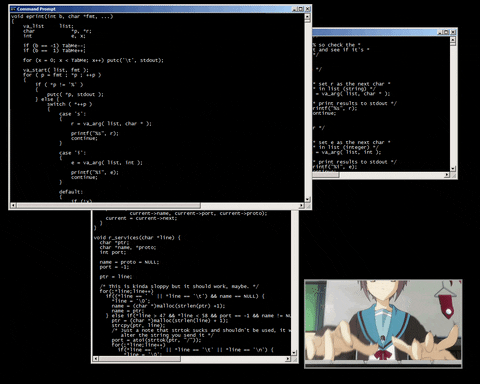

Avatar
Avatar
Website is a hyper-media information storage system linking resources around the world. In website, browsers allow highlighted words or an icon which is called hyper links to display text, video, graphics and sound on a local computer screen. With the introduction of World Wide Web in 1989, concept of websites has become more popular. On this web, anyone can create a home page, which millions of users can watch on their computers and respond.
A paragraph generator uses a language model to generate text based on a given prompt or input. The model is trained on a large dataset and relies on patterns or features learned from that data to generate new text. The quality of the data will depend on the training data, and the complexity of the model used. You can leverage paragraph generators in various ways, such as building marketing campaigns, creating sales emails, publishing social media posts, writing long-form essays, etc.
There are many reasons why you'd want your team to leverage a paragraph generator: Save time: Writing is a tedious and time-consuming process. With a paragraph generator, you can break writer’s block and 10x your team’s current output (without sacrificing quality). Grow faster: As you spend less time writing first drafts of your content, you can focus on higher-level problems, like strategy. This can open new sales/marketing channels for your business, leading to rapid growth. Reduce burnout: Support your employees with the right tools to streamline their repetitive or routine writing tasks. With a paragraph generator, every member of your team will find the writing process easier, more efficient, and less headache-inducing.
